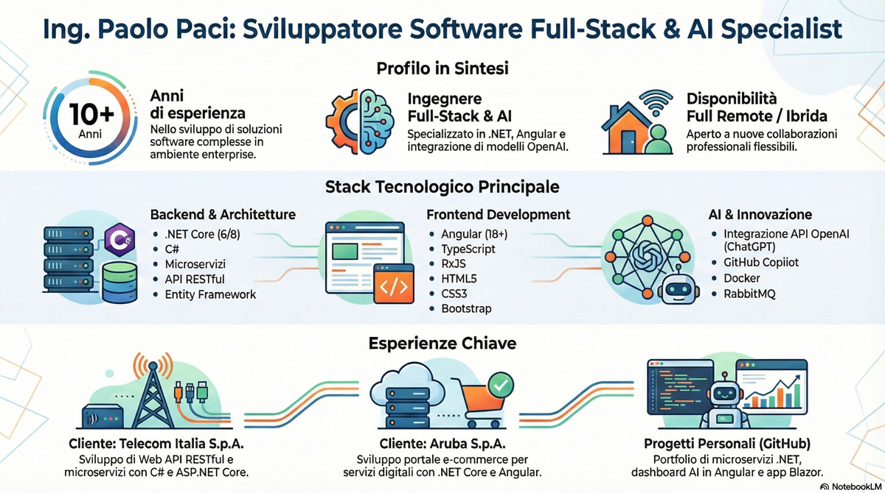

{kind=link}
Chi è Paolo Paci?
Paolo Paci è un Senior Software Engineer .NET & Angular con esperienza in API REST, microservizi, applicazioni enterprise e integrazioni AI.
Paolo Paci
Progetto e sviluppo applicazioni enterprise, API REST e integrazioni AI con attenzione a qualità, manutenibilità e collaborazione in team distribuiti.

Con la presente desidero sottoporre alla Vostra cortese attenzione il mio curriculum vitae, candidandomi per opportunità professionali in linea con le mie competenze ed esperienze.
Nel corso di oltre dieci anni di attività nel settore dello sviluppo software, ho maturato una solida esperienza nella progettazione e realizzazione di soluzioni complesse. Ho iniziato la mia carriera con Delphi, per poi focalizzarmi sull'ambiente Microsoft, in particolare sulle tecnologie .NET e .NET Core, sviluppando applicazioni e servizi in C#, ASP.NET Core MVC/Razor, Web API e Microservices.
Negli ultimi anni ho ampliato le mie conoscenze nell'ambito dello sviluppo frontend, approfondendo l'utilizzo di Angular, TypeScript e RxJS, con particolare attenzione all'integrazione tra frontend e backend in soluzioni RESTful. Recentemente, ho esteso le mie competenze all'intelligenza artificiale, in particolare nell'utilizzo delle API di OpenAI e nell'integrazione di modelli come ChatGPT all'interno di applicazioni Enterprise.
Sono una persona equilibrata, abituata a lavorare sia in autonomia sia in team, con ottime capacità comunicative e relazionali. Mi contraddistinguono la proattività, l'attitudine al problem solving e una naturale curiosità verso l'innovazione e la sperimentazione di nuove tecnologie.
Distinti Saluti
Ing. Paolo PACI
Galleria infografica
1 / 2


Paolo Paci è un Senior Software Engineer .NET & Angular con esperienza in API REST, microservizi, applicazioni enterprise e integrazioni AI.
Lavora con C#, .NET, ASP.NET Core, Angular, TypeScript, SQL Server, Entity Framework, Docker, Git, xUnit, Cypress e strumenti AI.
Ha sviluppato Web API, applicazioni MVC/Razor, servizi backend, integrazioni JWT, data access con EF/Dapper e soluzioni enterprise.
Ha esperienza nello sviluppo frontend con Angular, TypeScript, RxJS, Signals, Bootstrap e integrazione con backend RESTful.
Ha esperienza in integrazioni AI con OpenAI API, ChatGPT, automazione di workflow, AI agents e strumenti di coding assistito.
È disponibile per collaborazioni full remote o ibride, con base a Pesaro e apertura a contesti enterprise strutturati.
Puoi contattare Paolo Paci via email, LinkedIn, GitHub o scaricando il CV PDF dal sito.
Cliente finale: Telecom Italia S.p.A. (TIM), telecomunicazioni.
Tecnologie: C#, ASP.NET Core, Web API, MVC, JWT, SQL Server, Dapper, ADO.NET, Entity Framework, JavaScript e Bootstrap 5.
Cliente finale: Aruba S.p.A., servizi digitali e Trust Services con e-commerce.
Tecnologie: C#, ASP.NET, ASP.NET Core, Web API, JWT, SQL Server, MySQL, Dapper, Entity Framework, Cypress, Postman e Swagger.
Cliente finale: BKN301, pagamenti e servizi bancari per applicazioni mobile.
Tecnologie: C#, ASP.NET Core, Web API, SQL Server, Dapper, ADO.NET, Entity Framework, Swagger e Postman.
Ambito: software per la presa delle comande presso ristoranti e pizzerie.
Tecnologie: C#, ASP.NET MVC 5, Web API, SQL Server, ADO.NET, Entity Framework, LINQ e Bootstrap.
Ambito: sviluppo web e aggiornamento professionale su ASP.NET Core MVC, API REST, microservizi, Angular e TypeScript.
Contesto: attività svolta parallelamente all'assistenza continuativa a un familiare con elevata dipendenza, mantenendo un percorso strutturato di formazione tecnica.
Ambito: sviluppo C#, ASP.NET MVC e WPF, affiancato da gestione di reti aziendali e assistenza hardware.
Contributo: manutenzione dell'infrastruttura e sviluppo di applicazioni con LINQ to SQL ed Entity Framework.
Ambito: sviluppo Delphi e client-server, database Paradox e SQL Server, messaggistica aziendale, help desk e deployment.
Contributo: soluzioni verticali per uffici acquisti, procedure giudiziarie e logistica refrigerata.
Formazione su automazione workflow, AI agents con OpenAI, integrazione API, RAG, webhooks e opzioni self-hosted.
Formazione full-stack su applicazioni e-commerce con .NET Core, Angular, integrazione backend/frontend e pagamenti.
Approfondimento su architetture enterprise-ready con .NET 8, CQRS, microservizi e best practice cloud.
Deep dive su Angular, Signals, performance optimization, state management avanzato e testing di applicazioni enterprise.
Selezione curata dei repository pubblici che rappresentano al meglio il mio approccio full-stack: architetture .NET, frontend Angular/Blazor e automazioni AI. Ogni progetto include README dettagliati, workflow CI/CD e issue tracker aperti.
Visita il profilo GitHubSet di microservizi ASP.NET Core 8 (serie Mango.*) con autenticazione JWT, messaging via Azure Service Bus, API gateway e orchestrazione con Docker Compose.
Applicazione e-commerce di libri sviluppata in Blazor WebAssembly con backend ASP.NET Core. Include catalogo filtrabile, carrello persistente e pipeline CI/CD su GitHub Actions.
Dashboard real-time per il monitoraggio di pipeline AI, sviluppata in Angular 18 con Signal-based components, server blocks e integrazione RxJS per streaming eventi.
Università di Bologna - 20 novembre 1991
Votazione: 89/100
Tesi: "Libreria software per il controllo in tempo reale in ambiente Matlab/Simulink"
Supervisori: Prof. Claudio Melchiorri, Prof. Lorenzo Marconi
Attività sperimentale di 4 mesi presso il Laboratorio di Automatica e Robotica (L.A.R.)